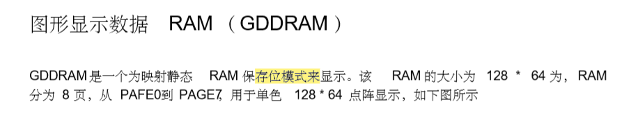

OLED屏幕显示原理
128*32的分辨率表示此OLED屏幕被分为128列*32行，每列可以显示32个位，每行可以显示128个位，每个位可取0或1，分别代表屏幕对应的点熄灭和亮起。

此处使用的oled和图中描述有点不一样，RAM大小为128*32，RAM也被分为4页PAGE0到PAGE3。（8行为1页）


OLED的三种寻址方式：
页寻址：

页地址模式下，每次填充一个字节数据即一列数据后，列指针加1，直到整个页被完全填充后，列指针会指向列开始地址。必须要手动设置新页和列地址才能访问其他页。
在正常显示数据 RAM 读或写和页地址模式， 要求使用下面的步骤来定义开始 RAM 访问的位置：
1.设置目标显示的开始地址：Command B0h到B3h
2. 通过 00h~0Fh 来设置低开始列地址的指针
3.通过命令 10h~1Fh 来设置高开始列地址
意思就是：如果页地址设置为B2h，列低地址设置为03h，列高地址为设置为10h，就意味着OLED显示开始于页PAGE2的第三列，输出数据将写到RAM的列3的位置。

列地址的计算方法：列高地址左移四位后按位或上列低地址，再与0x7f按位与得到列地址。例如列高地址为0x16h,列低地址为0x05h，得到的列地址为0x65h，即列的第101列。由于最后的按位与上0x7f，使得列高地址只有最后三位有效，而列低地址只有后四位有效，最后列地址的有效范围为2的7次方刚好为128列。
水平寻址：

水平寻址模式下，当列地址指针移动到列结束地址时，页地址自动加1，且列地址指针重置为列的开始地址，相比于页地址的必须手动设置新页和列指针，水平寻址会自动设置为下一页的列开始地址。

垂直寻址和水平寻址只是页列互换。
三种寻址方法的页地址和列地址的开始结束地址的设置:
在正常显示 RAM 读或写，水平 /垂直寻址模式下，要求用下面的步骤来定义 RAM 访问指针
位置：
1. 用 21h 命令设置目标显示位置的列的开始和结束地址；
2. 用命令 22h 设置目标显示位置的页的开始和结束地址
设置列地址（ 21h） 这个三字节命令指定了显示数据 RAM 列开始地址和结束地址。这个命令也会设置列地址指 针到列开始地址。这个指针用于定义当前读写的显示数据 RAM 列地址。如果用 20h 命令开 启了水平寻址命令， 在完成读写一个列数据之后， 该指针就会自动指向下一列地址。 当什么 时候列地址指针完成了访问列结束地址， 它就会返回到列开始地址， 和行地址增加到下一行。
这个三字节的命令指定了显示数据 RAM 页的开始和结束地址。这个命令同时也设置了页地 址指针到页开始地址。这个指针用来定义在图像显示数据 RAM 中当前读写的地址。如果当 前是垂直寻址模式， 在读写完一页数据之后， 会自动增加到下一页地址。 当页地址指针完成 访问结束页地址之后，会重置到开始页地址。
下面的插图展示了列和页地址指针的移动方式：
列开始地址设置为 2，列结束地址设置为 125，
页开始地址设置为 1，页结束地址设置为 6；
通过命令 20h 使能水平地址增加模式。
在这个 案例中， 图形显示数据 RAM 可访问的地址就只有从列 2 到列 125，页 1 到页 6。另外，列地 址指针被设为 2 页地址指针被设为 1.在完成读写数据中的一个像素后， 列地址自动加 1 到下 一个 RAM 位置进行下一次读写操作。当列地址指针完成访问结束列地址 125 之后，重新回 到列 2，页地址自动加 1。当结束页 6 和结束列 125 RAM 位置被访问过之后， 页地址设回 1， 列地址设回 2。

在弄清楚了OLED的显示原理后，开始编写OLED驱动和显示函数，采用GPIO模拟IIC。


由上图可知，对OLED进行操作时，首先要写入OLED的IIC硬件地址为0x78（对IIC进行写入时为0x78，进行读取时是0x79），接下来第二次写入判断接下来的数据是命令还是数据，如果是命令，则发送0x00反之发送0x40.
上面两个函数包含一次对OLED的完整操作，启动IIC，写入命令或者数据，停止IIC。

此函数根据传入的cmd参数判断dat为命令还是数据，如果cmd为0，表示dat为命令，反之为数据。
OLED的初始化：


在初始化中没有初始化寻址模式，而默认OLED的寻址模式为页寻址。此函数将一个字节的数据填充满在整个OLED屏幕。从第一页0xb0和第一列开始，写入数据0x01到OLED屏幕，列地址指针会自动后移，执行128次后停止跳到下一页，反复执行，直到PAGE0到PAGE3全部被填满。

设置坐标的函数，可以认为是鼠标的光标，定位到OLED屏幕的某一处坐标为（x,y），其中y表示所在的页，x表示所在页的某一列。第二行代码取x的高四位按位或上0x10,相当于执行了选中列高地址的命令，而第三行代码取x的低四位，相当于执行了选中列低地址的命令。

此函数将清空OLED显示，OLED被清空后将会是黑色，无任何显示状态，相当于执行了，fill_picture（0）函数。0代表数据所有位都为0，屏幕全黑。

此函数将设置OLED屏幕为全亮，相当于执行了，fill_picture（0xff）函数。0xff代表数据的所有位都为1，即全部亮起。

开启OLED显示，此函数只是将内部DC电路作为Vcc，并使用AF命令开启显示。

关闭OLED显示，此函数关闭使用内部DC电路供电，并使用AE命令关闭显示。
再谈谈OLED上可打印ASCII字符的显示：
字符在OLED上的显示方法有多种，主要是一个字符显示占用OLED的点阵大小，常见的有16*8和8*8即使用16行8列显示一个字符，或者使用8行8列显示一个字符，当然，使用OLED显示点阵越小，分辨率也会降低。
如何获得一个字符的点阵：
使用软件PCtoLCD2002可以获取任意字符的点阵和汉字的点阵

采用OLED的默认页寻址方式，以8*16的分辨率显示字符时，可以先显示第一页的所有列，再显示第二页的所有列。选择低位在前。

生成字符A的点阵示例和数组。


数组中一共包含了16个元素，每个元素为一个字节，每个字节在OLED上的显示为前8个字节显示在第一页，后八个字节显示在第二页，由低位到高位从上到下显示。
同理也可以显示16*32分辨率的字符：

数组也会相对复杂：

以下是4*8的字符显示

同样也可以显示汉字，汉字一般是16*16显示或者32*32显示：

如上图“航”字的显示，对应的数组：


由于此OLED屏为32*128，且从上图可知4*8的字符显示已经基本无法辨认，最好使用8*16或16*32的显示方法，而为了能显示多行，最好使用8*16的点阵集。将所有可打印的ASCII字符都以8*16的显示方法制作出来，放入一个二维数组，这样显示一个字符可以直接从数组里取出来即可。而由于中华文化博大精深，汉字的数量太多，且没有规律，这里只做有限的几个需要使用的汉字的点阵数组。

字符显示函数：

x代表列，y代表页。chr为要显示的字符。先在二维点阵数组找到要显示的字符，如果列x大于128，就默认跳到行，而这里每两页显示一个字符，所以y要加2到第三页。
接下里根据页寻址的原理，先显示字符点阵数组的前八个元素到第一页，再显示后八个元素到第二页。
字符串显示函数：

直接调用字符显示函数显示字符串chr中的所有字符，如果第一行显示满了，则页指针向下跳两页到PAGE2。列指针重置为0。
汉字的显示，汉字在以16*16显示时，要使用二维数组的两个16元素的一维数组，

x代表列，y代表页，no代表汉字开始的一维数组，数组Hz2中包含了所有要显示的汉字，取第一个汉字时no为0，将前16个字节显示在第一页，后16个字节显示在第二页。
OLED显示图片：显示图片相当于将一副图片拆分成最大为128*32的点阵图：
使用OLEDTools生成点阵图：

在PCtoLCD2002下根据上图进行点阵图的构造：（在PCtoLCD2002下也可以直接根据图片生成点阵图，但是当修改图片分辨率为128*32后，生成的点阵图非常不清晰，故采用其他软件先生成，后自己画）

得到一个32*16的点阵二维数组：


将整个图片点整数组全部写入到OLED每次写入一页，当页的列数达到128时，重新从下一页的第一列开始写入，直至完全写完。
OLED添加滚动显示效果：

命令0x2E关闭滚屏，0x2A开启水平和垂直方向向左的滚屏接下来的五条命令为固定格式，第一条0x00为固定，第二条0x00代表滚动起始页地址，第三条0x00代表每次滚屏时间间隔为5frame，第四条0x03代表滚动结束页地址，第五条0x00代表垂直方向不启动滚屏。最后0x2f开启滚屏。传入flag为1和0分别代表启动和关闭滚屏。
main函数

图片：


软件OledTools，此软件可根据图片生成点阵，点整分辨率比PCtoLCD2002高，可先在此软件生成点征途，再在PCtoLCD2002模仿画出来，生成点阵数组。
如下：

选择图形模式

构造图片


填入图片

生成数组

生成字符和汉字的方法：